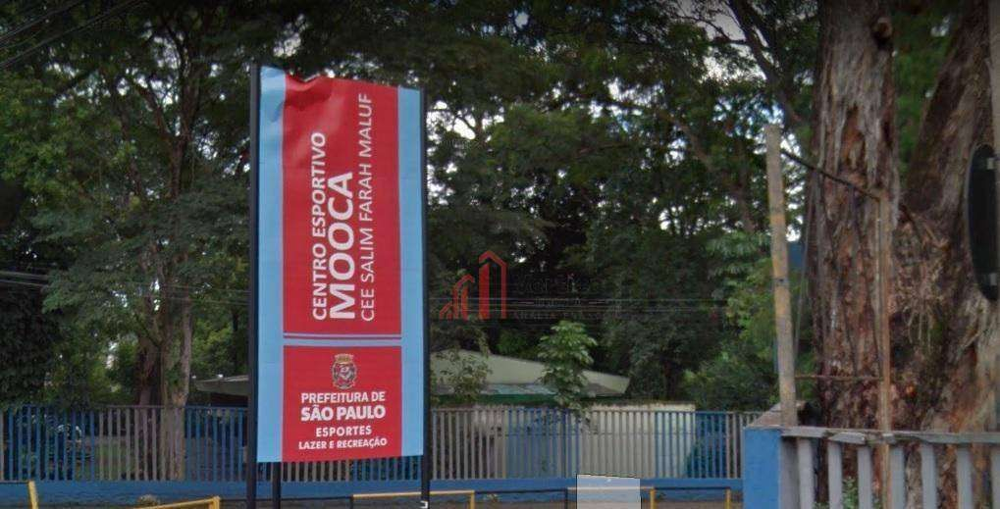
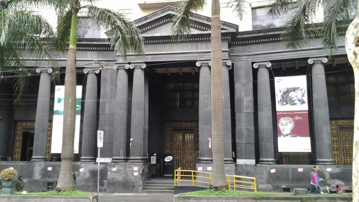
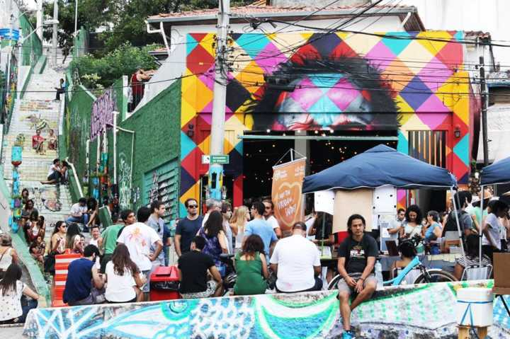
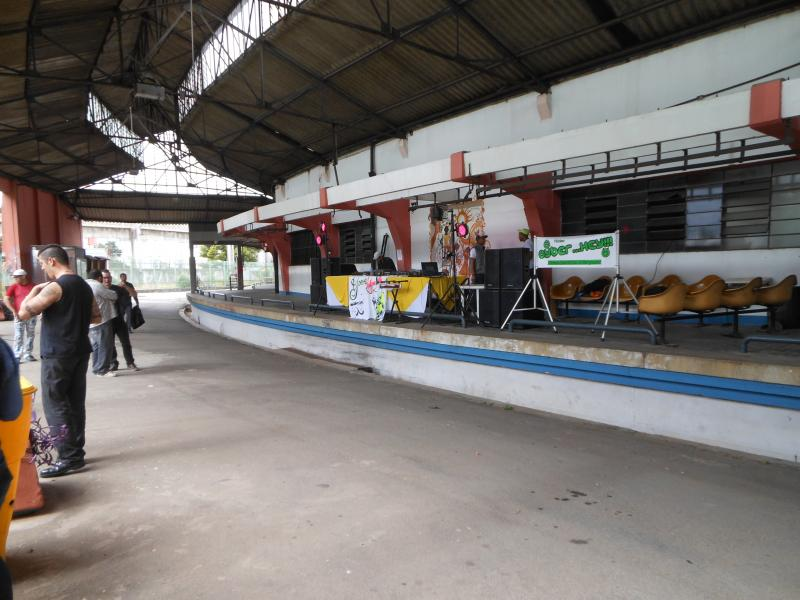

Pico do Jaraguá
O pico do Jaraguá abrigou há muito tempo o português Afonso Sardinha, bandeirante, caçador de índios, que descobriu vestígios de ouro no ribeirão Itaí, no pico, por volta de 1580. Hoje o pico é um dos pontos mais altos do município de São Paulo, elevando-se a uma altura de 1.135 metros. Ele fica localizado no bairro do Jaraguá, a oeste da Serra Cantareira, e nos seus arredores foi criado o Parque Estadual do Jaraguá. Ao atingir o cume, é possível ver grande parte da zona Oeste de São Paulo, bem como o Rodoanel Mário Covas, na parte posterior.

Endereço e como chegar: Aqui estão algumas linhas de ônibus que passam por lá.
Beco do Hulk
Um dos mais famigerados personagens da Marvel, o Incrível Hulk, dá vida a um beco no distrito de Ermelino Matarazzo, na Zona Leste de São Paulo. Ao lado de muitos outros heróis que marcaram a vida de muitos, o Grandalhão Verde ganhou destaque e inclusive ficou marcado logo no nome da viela. No corredor cultural de 80 metros de comprimento — cinco vezes menor que seu primo famoso, o Beco do Batman, na Vila Madalena — também chama atenção a heroína Ironheart, criada pela artista Mari Memo. Ela é uma versão mulher e cacheada do Homem de Ferro, e vem conquistando seu lugar não apenas no Beco do Hulk, mas também, nos cinemas, como forma de inclusão às mulheres.

Endereço e como chegar: Aqui estão algumas linhas de ônibus que passam por lá.
Centro Cultural da Juventudade (CCJ)
O CCJ (Centro Cultural Municipal da Juventude), é um local de acesso gratuito que proporciona diversas temáticas relativas à vivência da condição juvenil por meio da cultura, buscando o protagonismo da juventude a partir de uma programação cultural gratuita e diversificada, tendo o jovem não somente como espectador, mas como sujeito promotor, organizador e realizador dos Programas e Projetos realizados tanto no espaço como difundidos pela cidade. Todas as atividades são gratuitas, além de acontecer diversos eventos, que voltaram depois da pandemia da COVID-19. Os eventos acontecem em datas especiais, como o dia da consciência negra, um evento que aconteceu este ano.

Endereço e como chegar: Aqui estão algumas linhas de ônibus que passam por lá.
CEE Mooca
O Clube Escola da Mooca, ou CEE Salim Farah Maluf, é um parque localizado no bairro da Mooca, que oferece espaço de lazer e aulas ministradas para frequentadores da área. Esse Clube busca contribuir para a construção e o aprimoramento de políticas públicas, desenvolvendo ações que possam servir de referência nacional e internacional, no âmbito do lazer e da prática desportiva. Os esportes oferecidos pelo clube destacam-se aulas de natação, pólo aquático, judô, tênis, basquete, vôlei, além capoeira, hip hop e dança circular. Tudo 100% gratuito, e para o acesso a piscina, e aulas como Tênis, por exemplo, os frequentadores terão que apresentar: RG, uma foto 3x4, comprovante de residência, e atestado médico que comprove que não há restrição à prática esportiva. Assim, será restrita a carteirinha para ter acesso ao Clube e escolher entre as diversas modalidades de esportes e aulas diferenciadas.

Endereço e como chegar: Aqui estão algumas linhas de ônibus que passam por lá.
Centro Cultural de São Paulo
O CCSP (Centro Cultural de São Paulo) é um local de acesso gratuito e com acessibilidade para todos, sendo um projeto da Secretaria Municipal de Cultura que tem foco em núcleos de Acervo, Curadorias, bibliotecas, Ação cultural e Projetos. Os centros culturais em si têm o objetivo de distribuir espaços de lazer comunitário, visando o acesso à cultura para todas as idades. O CCSP é um espaço que abriga diversos cursos além de fornecer acesso à internet gratuita para todos. Neste local podemos encontrar um pouquinho de tudo: Teatro, Literatura, Cinema, Moda, Ação cultural, Artes Visuais, Música, Dança e muito mais.

Endereço e como chegar: Aqui estão algumas linhas de ônibus que passam por lá.
Liberdade
A Liberdade é um excelente ponto turístico, além de ser famosa pela sua influência japonesa, a zona destaca-se também por suas feiras gastronômicas. O bairro é a região com a maior população japonesa do Brasil, nele há uma grande gama de costumes e tradições que vale a pena conhecer. Mesmo com pontos comerciais, como restaurantes, feiras, mercados e lojas, encontram-se locais gratuitos e ricos em história, como o famoso Jardim Oriental, repleto de vegetação natural do Japão, o espaço em dias marcados, elabora uma feira gastronômica dentro do jardim com comidas típicas do Japão. Outro local gratuito é o Palacete Conde de Sarzedas, que foi construído para homenagear uma história de amor, do conde de Sarzeda que se apaixonou por uma mulher 40 anos mais jovem, casou-se e viveu no Palacete até 1939. Para a visita ao Palacete o horário deverá ser agendado na coordenadoria do museu através dos telefones (11) 3295-5817 e 3295-5818. E por último não menos importante temos o Templo Busshinji, com meditação para iniciantes e caminhas pelas instalações.

Endereço e como chegar: Aqui estão algumas linhas de ônibus que passam por lá.
Caixa Econômica Federal
Caixa Econômica Federal (CEF), também conhecida como Caixa, é uma instituição financeira brasileira, sob a forma de empresa pública, com patrimônio próprio e autonomia administrativa com sede em Brasília, no Distrito Federal, e com filiais em todo o território nacional, a Caixa também é vinculada ao Ministério da Economia. Em São Paulo, o prédio da Caixa, inaugurado por Getúlio Vargas em 1939, hoje virou patrimônio histórico, é possível visitar a sala que o ex-presidente ficava quando se instalava em São Paulo, com móveis instalados da época, as mesas de reunião e até consultório médico com objetos inusitados. Em outro ambiente há também alguns elementos que contam mais sobre a origem da Caixa Econômica Federal. A visita é gratuita, e para isso, basta solicitar um guia na recepção durante a visita ao museu.

Endereço e como chegar: Aqui estão algumas linhas de ônibus que passam por lá.
Fábrica de Cultura
A Fábrica de Cultura está em diversos lugares em São Paulo, é um lugar de fácil acesso e com uma infinidade de cursos e eventos totalmente gratuitos que qualquer um pode ir. Fábrica de Cultura – Vila Nova Cachoeirinha, esta é uma fábrica que fica ao lado de uma área periférica, focando mais em pessoas da comunidade que tem interesse de ir até lá, ela traz eventos e cursos voltado mais para a cultura dessas pessoas, além de claro, trazer cursos de outras culturas e também eventos, como teatros, peças musicais, dança e literatura, com a disponibilidade de uma biblioteca gratuita.

Endereço e como chegar: Aqui estão algumas linhas de ônibus que passam por lá.
Armazém da Cidade
Localizado na região da Vila Madalena, o Armazém da Cidade é um espaço multifuncional que terá áreas dedicadas ao café, à cerveja e queijos artesanais. O espaço ainda conta com produtores incentivados pelo chef Alex Atala, que terão itens expostos no galpão. Idealizado pelo jornalista Gilberto Dimenstein, o espaço dá ênfase a produtos feitos artesanalmente. E ainda o Armazém da Cidade promove feiras culturais com pequenos produtores de moda, gastronomia e artesanato. Oferece ainda oficinas gratuitas e apresentações de shows.

Endereço e como chegar: Aqui estão algumas linhas de ônibus que passam por lá.
Tendal da Lapa
O Tendal da Lapa é um espaço localizado no bairro da Lapa, em São Paulo. O ambiente oferece apresentações teatrais, oficinas, danças, esportes e músicas gratuitas, ministradas por professores voluntários. Tendal da Lapa – Água Branca, o local que no passado funcionava como armazém de carnes, acabou sendo invadido em 1989, promovendo encontros culturais, que hoje após algumas mudanças como nome, “A Fábrica dos sonhos” para “Tendal da Lapa”, tem como objetivo trazer cultura pensando na acessibilidade como eventos e oficinas gratuitas.

Endereço e como chegar: Aqui estão algumas linhas de ônibus que passam por lá.